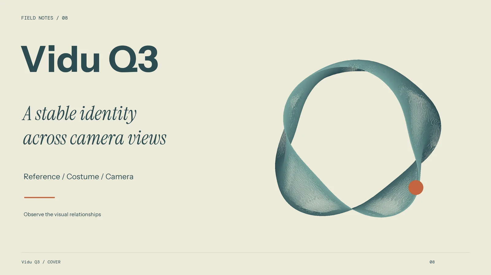
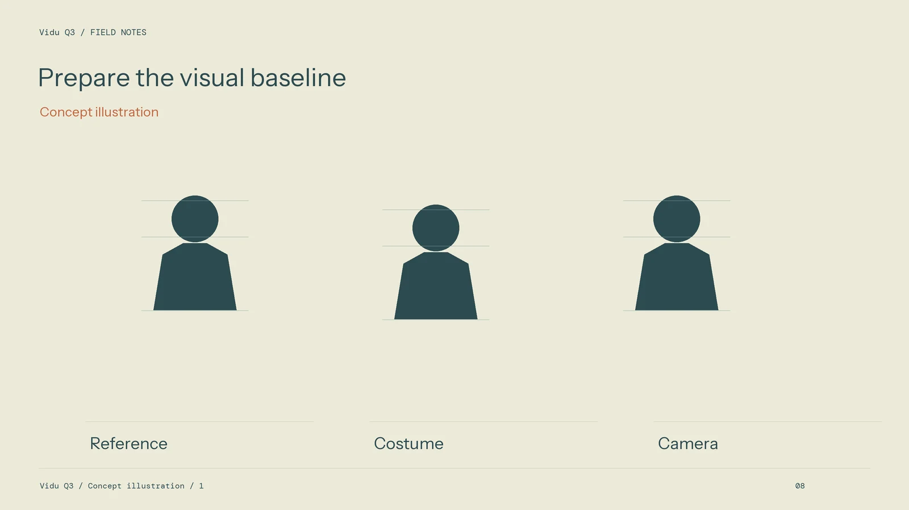
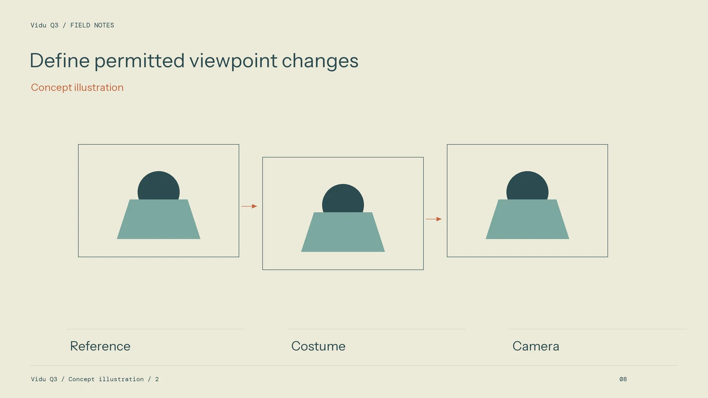

Building a Character Reference Package for a Vidu Q3 Sequence

Character continuity is a production problem before it becomes a generation problem. A team needs to agree on what identifies the character, which changes are allowed, and how the audience should recognize the person across different shots. Without that baseline, even careful review can become subjective.
When planning a sequence with Vidu Q3, begin with a compact reference package and a clear continuity checklist. The method below describes asset preparation and inspection. It does not guarantee that a particular reference arrangement will preserve every feature in every candidate.
Define the features that carry identity
Choose a small set of recognizable anchors: facial shape, hairstyle, costume silhouette, dominant colors, and distinctive accessories. Write them down in plain terms. Include only details that matter to the story or the viewer's recognition.
Review the anchors at the size the character will occupy in the final edit. A tiny pendant may be important in a close-up but irrelevant in a wide view. This helps the team avoid spending time on details the audience cannot see while missing a larger costume or proportion change.

Make the references agree with one another
Prepare clear views that communicate appearance without contradictory styling. Keep lighting and color reasonably consistent. A dramatic colored light can obscure the actual garment color, while an unrelated costume variation can confuse which version is approved.
Use the reference types and quantities supported by the selected mode. Do not assume a collection prepared for one route can be submitted unchanged to another. Keep the full production package organized even when only part of it is used for a particular attempt.
Describe the new action without rewriting the identity
The shot brief should explain what changes: action, expression, viewpoint, and the relevant environment. Avoid adding unnecessary appearance descriptions that conflict with the approved references. If a costume change is intentional, give it a distinct version record.
Start with a manageable camera intention. A simple angle change is easier to evaluate than a complex move combined with an emotional performance and a prop exchange. Increase difficulty only when the simpler task provides a useful baseline.
Review continuity across the cut
Place candidates next to their neighboring shots in a rough timeline. Check recognition, costume details, direction of light, and action position at the transition. A shot can look convincing alone while creating an obvious mismatch in sequence.

Current service options at viduai.co should be checked for the chosen mode. Save that context with the references and candidate record. The useful question is whether this package and this setup support the intended scene, rather than whether a brand can “lock” identity universally.
Treat a mismatch as a diagnosis
Record whether the defect concerns appearance, costume, viewpoint, light, or action. Then change the most relevant part of the setup. Replacing every input at once makes it difficult to learn which correction helped.
Create a short continuity contact sheet from the chosen views. Arrange neighboring shots in story order and compare them at a consistent scale. This can make a changing collar, accessory, or hair outline easier to spot than repeated playback alone. Keep the contact sheet as a review aid rather than treating it as evidence that the unseen transitions are sound; the moving sequence still needs inspection.
Archive the approved baseline, selected exports, and rejection notes in a shared folder. Give a teammate enough information to continue the sequence without guessing which character version is current. A reference package becomes a real production asset when it supports both consistent decisions and an understandable revision process.